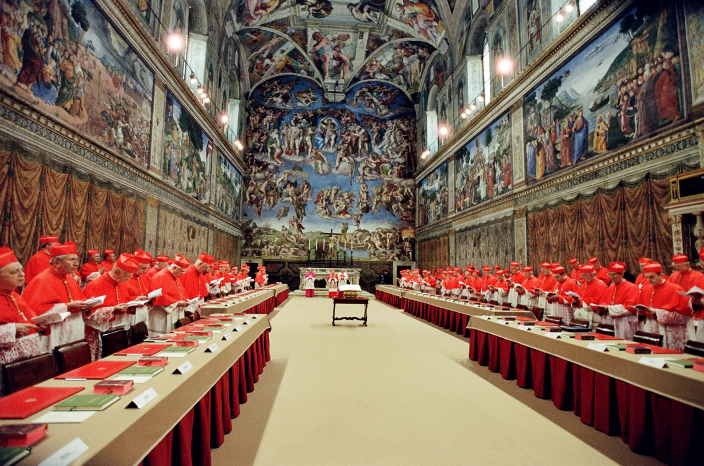

Can Network Science Predict the New Pope? Insights from the 2025 Conclave
1. The Power of Networks in the Papal Election
The election of a new pope is one of the most secretive and consequential decisions in global religious affairs. While spiritual discernment is central, recent research from Bocconi University reveals that social dynamics—such as status, alliances, and information flow among cardinals—play a crucial role in shaping the outcome. The 2025 conclave, with 133 cardinals from 70 countries, provided a unique opportunity to test the predictive power of network science in this ancient process.
2. How Network Science Illuminates the Conclave
The Bocconi study mapped the Vatican’s relational ecosystem by analyzing official roles, spiritual lineages, and informal connections among cardinals. It identified three key factors that determine a cardinal’s prominence:
- Status: Institutional authority and visibility within the Church hierarchy.
- Information Control: Ability to connect different groups and influence information flow.
- Coalition-Building: Embeddedness within cohesive groups and capacity to unite factions.

3. Segmentation of Cardinals: Status, Ideology, and Influence
The Bocconi network analysis segments cardinals by ideological orientation and influence. Below is a summary of the main groups identified:
| Segment | Ideology | Characteristics | Key Figures |
|---|---|---|---|
| Liberal | Reformist, progressive | Advocate for Church openness, social justice, aligned with Pope Francis’s vision | A. Roche, L. Heung-sik, T. Tobin |
| Soft Liberal | Moderate reformist | Support gradual change, bridge between liberals and moderates | C. Cupich, J. Advincula |
| Moderate | Centrist | Balance between tradition and reform, pragmatic coalition builders | R. Prevost, G. Re |
| Soft Conservative | Moderate traditionalist | Lean toward tradition but open to some reforms | A. Arborelius |
| Conservative | Traditionalist | Emphasize doctrine and liturgical tradition, cautious about reforms | R. Sarah, G. Marengo, Fridolin Ambongo Besungu |
| Non-voting | N/A | Cardinals above voting age or not participating | G. Bertone, W. Kasper |
4. The 2025 Conclave: Network Science Meets Reality
The 2025 conclave confirmed the value of network analysis. Despite media speculation favoring Italian or Asian candidates, the election of a moderate cardinal who bridged several ideological groups mirrored the Bocconi model’s predictions. The new pope’s ascent was less about public profile and more about his centrality in the Church’s complex relational web.
“We’re not trying to forecast the future... This model is meant to offer perspective, not prophecy.”
– Professor Giuseppe Soda, Bocconi University
As the Church continues to globalize and diversify, understanding the conclave as a networked system will become increasingly relevant for scholars, journalists, and the faithful alike.
References
- Bocconi University. “Network Conclave: How Network Science Sheds Light on the Papal Election.” Read Bocconi Study
- The Washington Post. “Photo of the New Pope.”